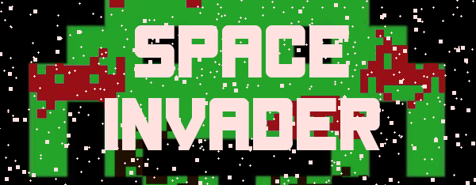
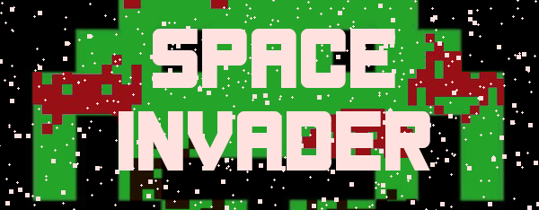

Projet final : formation ISN dans le réseau AEFE
De quoi s'agit-il ?
Ce site et les petits jeux auxquels il renvoie est le fruit d'un travail réalisé à deux. C'est le support de soutenance en vu de prétendre à l'habilitation ISN. Pour nous, il s'agit ici de faire se rencontrer plusieurs aspects de l'enseignement d'ISN, tant technique que de culture numérique.
Cela fait naturellement écho :
- au travail de programmation dans le langage Python, mobilisant principalement le module Pygame,
- au travail de mise en forme avec les langages de balisage HTML et CSS,
- au question plus large des droits pour les images ou les contenus publié en ligne, mais également de mettre en oeuvre des communications réseau entre client et serveur
L'entrée de départ est celle des jeux et de leur programmation. C'est l'une des aspirations récurrentes exprimées par les élèves qui choississent de s'investir dans cette spécialité. L'expérience acquise à l'issue de nos deux années d'enseigenemnt dans ce cadre nous a aussi rassuré sur le potentiel que représente une telle entrée pour le projet final.
Cette petite plateforme vous propose de jouer à trois jeux retro et marquants tels que Bomberman, Snake ou Space Invader.
Le Sommaire permettra de s'orienter entre les différentes pages de présentation et les différents jeux que nous vous présentons.
Bonne navigation !

 
